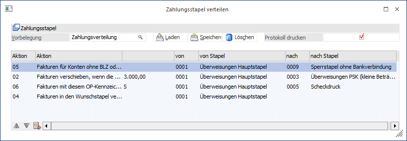

Im Menüpunkt
1 Buchen
1 Zahlungsverkehr
1 Zahlungsstapel verteilen
können Zahlungen nach verschiedenen Kriterien automatisch von einem Stapel in andere Zahlungsstapel verschoben werden. Z.B. um alle Zahlungen, die einen Betrag von 20.000,- übersteigen von einer anderen Hausbank zu zahlen - oder alle OPs gemäß dem im Personenkonto hinterlegten Wunschstapel zu verschieben (die Zuweisung des Wunschstapels erfolgt im Personenkontenstamm im Adress-Fenster), damit bestimmte Lieferanten z.B. einen Begleitzettel bekommen, andere nicht; bestimmte Lieferanten mit Datenträger überwiesen werden, andere durch Bedrucken von Überweisungsformularen gezahlt werden, etc.
Ø Vorbelegung
Durch Eingabe einer Bezeichnung im Feld "Vorbelegung" können Sie alle Verteilungsregeln unter einem Namen abspeichern. Damit muss die Verteilungslogik nur einmal definiert werden - und kann im laufenden Betrieb sehr einfach wieder abgerufen werden.

Verteilungsregeln (Aktion):
ü 01 Fakturen verschieben, wenn die
Summe pro Konto größer als
Alle Fakturenzeilen werden aus dem anzugebenden
Quellstapel (von Stapel) in den einzugebenden Zielstapel (nach Stapel)
verschoben, wenn die Summe der im Ausgangszahlungsstapel befindlichen OPs für
ein Personenkonto den eingegebenen Betrag übersteigt
ü 02 Fakturen verschieben, wenn die
Summe pro Konto kleiner als
Alle Fakturenzeilen werden aus dem anzugebenden
Quellstapel (von Stapel) in den einzugebenden Zielstapel (nach Stapel)
verschoben, wenn die Summe der im Ausgangszahlungsstapel befindlichen OPs für
ein Personenkonto den eingegebenen Betrag unterschreitet
ü 03 Fakturen ab Saldo
verschieben
Alle OPs, die einen bestimmten Saldo überschreiten, werden aus
dem anzugebenden Ausgangsstapel in den anzugebenden Zielstapel verschoben
ü 04 Fakturen in den Wunschstapel
verschieben
Alle OPs werden aus dem anzugebenden Ausgangsstapel in den im
Personenkonto hinterlegten Wunschstapel verschoben (hier muss kein Zielstapel
eingegeben werden, da der Zielstapel ja dem Wunschstapel des Personenkontos
entspricht
ü 05 Fakturen für Konten ohne BLZ
oder Kontonummer verschieben
Alle OPs von Konten, bei denen in den Stammdaten
keine Bankleitzahl und/oder Kontonummer hinterlegt worden ist, werden aus dem
anzugebenden Quellstapel in den einzugebenden Zielstapel (der z.B. als
Sperrstapel definiert sein könnte) verschoben. Damit gelangen niemals
versehentlich Zahlungen zur Überweisung, wenn im Personenkontenstamm die
Zahlungsinformation fehlt.
ü 06 Fakturen mit diesem
OP-Kennzeichen verschieben
Alle OPs, die einem einzugebenden OP-Kennzeichen
entsprechen, werden vom vorzugebenden Ausgangsstapel in den einzugebenden
Zielstapel verschoben.
ü 07 Fakturen für Konten ohne IBAN
verschieben
Alle OPs, die keine IBAN in den Bankverbindungen eingetragen
haben, werden vom Quellstapel in den Zielstapel verschoben.
ü 08 Fakturen für Konten ohne BIC
oder IBAN verschieben
Alle OPs, die keine IBAN oder keinen BIC in den
Bankverbindungen eingetragen haben, werden vom Quellstapel in den Zielstapel
verschoben.
Durch Aktivierung der Checkbox "Protokoll drucken" wird beim Verteilungsvorgang automatisch auch ein Protokoll auf den Drucker ausgegeben (oder Spooler - je nachdem, welcher Device eingestellt ist).
Mit den Pfeil-Buttons können bereits eingegebene Verteilungsregeln bezüglich der Reihenfolge verschoben werden. Der Verteilungslauf wird exakt nach der in der Tabelle vorgegebenen Reihenfolge durchgeführt - dementsprechend werden die Stapel in einer bestimmten Reihenfolge verteilt bzw. gefüllt. Beachten Sie also beim Erstellen der Verteilungsregeln unbedingt die Richtigkeit der Reihenfolge - sonst könnte es vorkommen, dass Fakturen in einen Zahlungsstapel verschoben werden, der in späterer Folge nicht mehr weiterverteilt wird (da diese Verteilungsregel bereits weiter vorne durchgeführt worden ist).
Durch Drücken des Buttons "Entfernen" können bereits eingegebene Verteilungsregeln wieder gelöscht werden.
Die Buttons "Laden", "Speichern" und "Löschen" beziehen sich auf die Vorbelegung.
Durch Drücken der Taste "OK" wird der Verteilungslauf gestartet.
Nach erfolgreicher Beendigung des Verteilungslaufes sind Ihre Zahlungsstapel mit den gewünschten OPs befüllt worden, d.h. der letzte Schritt ist die Ausgabe der Zahlungsstapel auf das von Ihnen gewählte Medium (siehe Kapitel "Zahlungsverkehr - Ausgabe").